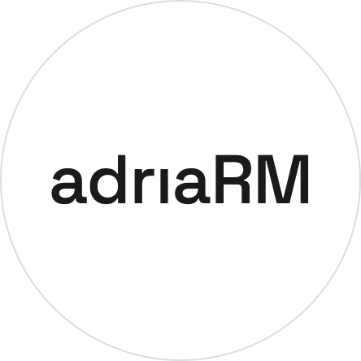

This full test was generated end-to-end by the pipeline: Gemini wrote the transcripts and matching
questions, and Google Cloud Text-to-Speech synthesized the audio with gender- and accent-aware voices.
See the full project on GitHub →

A real, generated 4-part mock test — listen right here.